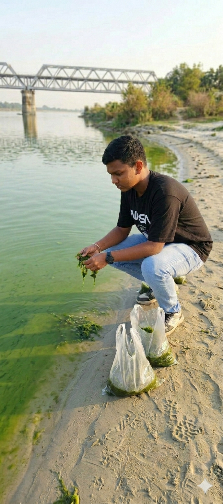
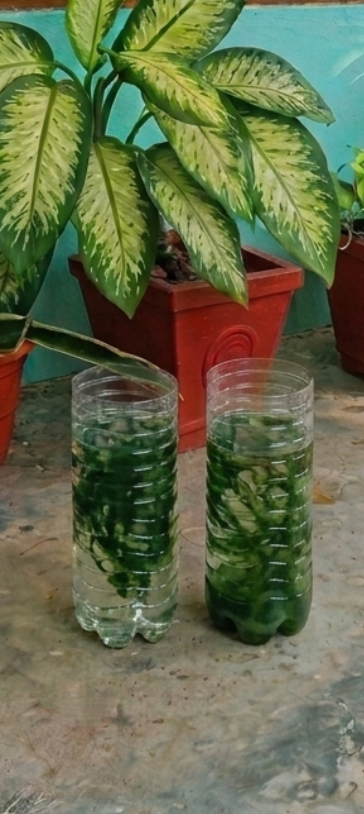
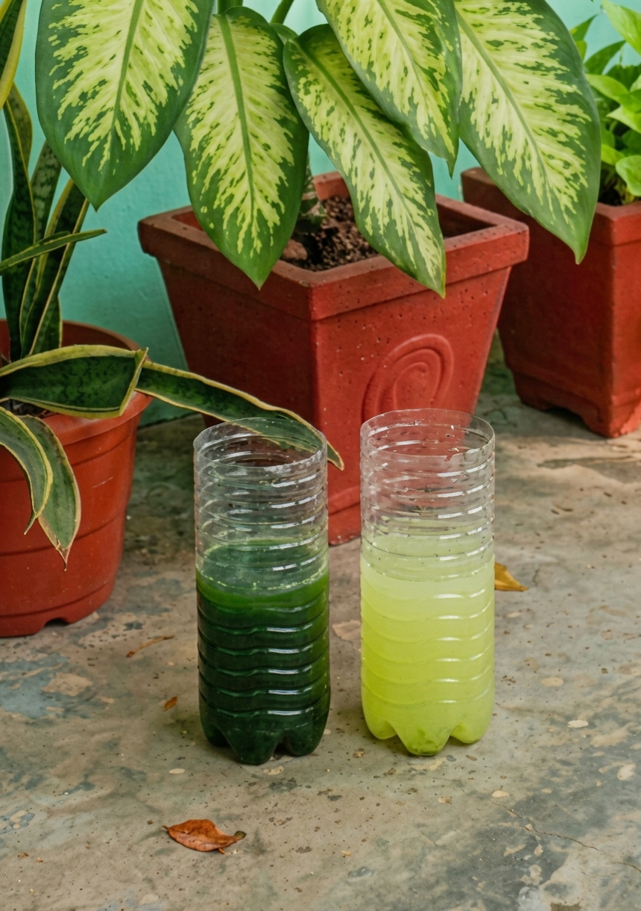
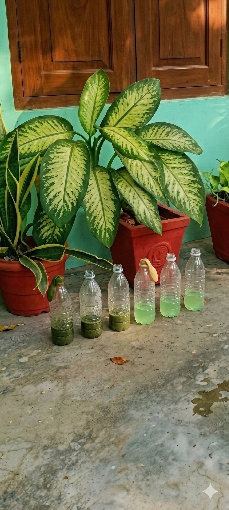
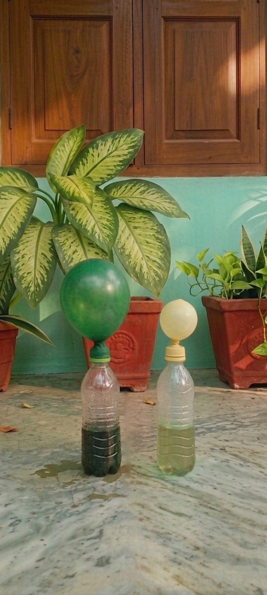
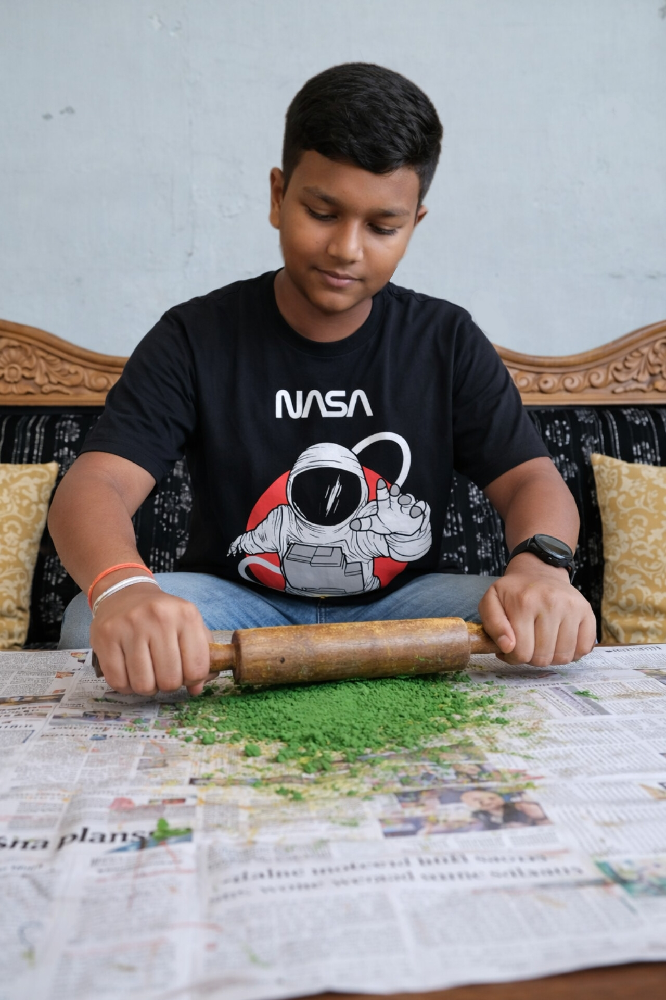
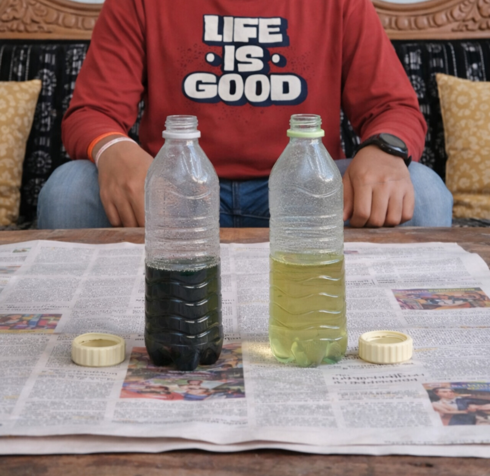

Harnessing Nitrogen-Stressed Microalgae for Low-Cost, Zero-Waste Biofuels — turning an ecological nuisance into a renewable energy solution.
Explore the ProjectThis project investigates the potential of nitrogen-stressed microalgae cultivated in eutrophic pond water near Ambazari Lake, Nagpur, as a sustainable feedstock for low-cost biofuel production. Nitrogen limitation in microalgae is a well-established trigger for enhanced lipid accumulation, making them promising candidates for biodiesel synthesis. The research follows a complete zero-waste pipeline: pond water is collected, microalgae are isolated and cultured under controlled nitrogen-stress conditions, biomass is harvested and subjected to anaerobic digestion (for biogas) and oil extraction via mechanical pressing and chemical solvent methods (for biodiesel). Observations record growth curves, lipid yield, and biogas output at each stage. Beyond energy production, the project demonstrates an ecological dual-benefit — remediation of eutrophic water bodies through nutrient uptake — and proposes a community-scale model for adoption near urban water bodies in Nagpur. The findings aim to establish a replicable, low-cost protocol suitable for deployment in resource-limited settings.
Rapid urbanisation and agricultural run-off have turned many freshwater bodies in central India — including Ambazari Lake in Nagpur — into nitrogen- and phosphorus-rich (eutrophic) environments that trigger algal blooms, deplete dissolved oxygen, and threaten aquatic biodiversity. Meanwhile, India's growing energy demand and its commitment to net-zero emissions by 2070 demand scalable renewable alternatives to fossil fuels. Microalgae represent a compelling bridge between these two challenges. Unlike terrestrial biofuel crops, they do not compete for arable land, can double their biomass within 24 hours, and accumulate up to 70 % lipids under stress conditions — making them among the most productive biofuel feedstocks on Earth. This project positions Ambazari's eutrophic bloom water not as a problem but as a resource: a free, nutrient-rich medium for cultivating high-lipid microalgae that can power a circular, zero-waste biofuel pipeline.
India imports over 85 % of its crude oil, and fossil-fuel combustion remains the dominant source of urban air pollution. Third-generation algal biofuels offer a decentralised alternative that can be produced on wastewater without freshwater consumption. However, high production costs — primarily harvesting and oil-extraction — have stalled scale-up. This research directly addresses cost reduction by (a) sourcing free feedstock from existing eutrophic ponds, (b) testing low-energy mechanical pressing alongside chemical extraction to benchmark yield vs. cost trade-offs, and (c) converting the post-extraction biomass residue into biogas via anaerobic digestion, ensuring zero organic waste. The scope extends from laboratory bench-scale experiments to a proposed community pilot model near Ambazari, with a targeted awareness programme engaging local residents and schools, thereby coupling scientific innovation with environmental literacy.
Isolate and identify native microalgae species from Ambazari Lake eutrophic water and characterise their baseline growth rates under standard nutrient conditions.
Induce nitrogen stress in cultured microalgae and quantify the resulting increase in total lipid content compared to non-stressed control cultures.
Compare mechanical pressing and chemical solvent (Soxhlet / Bligh-Dyer) extraction methods for biodiesel yield efficiency and cost-effectiveness at bench scale.
Evaluate anaerobic digestion of post-extraction algal residue to produce biogas (methane), completing a zero-waste energy cascade.
Assess the water-remediation co-benefit by measuring reductions in total nitrogen and phosphorus concentrations in treated pond water.
Propose a scalable, low-cost community pilot model and conduct an awareness programme targeting residents near Ambazari Lake.
If microalgae sourced from nitrogen-rich eutrophic water near Ambazari Lake are subjected to a controlled period of nitrogen deprivation (stress phase), then their intracellular lipid content will increase significantly compared to control cultures maintained under nitrogen-replete conditions — thereby yielding a greater volume of extractable biodiesel precursors per unit of dry biomass. Furthermore, the residual post-extraction biomass will generate measurable quantities of biogas during anaerobic digestion, validating the zero-waste cascade model. The integrated process will simultaneously reduce the nutrient load of the source water, demonstrating a viable dual-purpose bioremediation-and-bioenergy strategy.
Water samples were collected from three distinct zones of Ambazari Lake (inlet, open water, and shore) during early morning hours to capture natural bloom conditions. Physical parameters (turbidity, pH, temperature) and chemical parameters (nitrate, phosphate concentrations) were recorded using field test kits and a portable photometer. Samples were stored in sterilised dark bottles and transported on ice to the laboratory within two hours of collection.
Microalgae were isolated by serial dilution and spread plating on Bold's Basal Medium (BBM) agar plates under 12 h light / 12 h dark cycles at 25 °C. Dominant colonies were sub-cultured into liquid BBM and identified via light microscopy and Gram staining. Two representative strains were selected for the nitrogen-stress experiment: one nitrogen-replete control group (N+) and one nitrogen-deprived experimental group (N−) where the nitrate source was omitted after Day 7 of growth.
On Day 14, cultures were harvested by centrifugation (3 000 rpm, 10 min) and flocculation using alum at low doses. The resulting algal paste was spread on trays and dried at 60 °C in a hot-air oven to constant weight. Dry biomass yield (g·L⁻¹) was recorded for both N+ and N− groups. A portion of fresh wet biomass was retained for anaerobic digestion to preserve volatile organic content.
Dried biomass was split into two equal portions. One half underwent mechanical cold-pressing using a hand-operated screw press, and the remaining oil-cake was subjected to Soxhlet extraction with n-hexane for comparison. The second half (wet biomass residue) was loaded into a sealed digestion flask with an active sewage-sludge inoculum and maintained at 37 °C for 21 days, with daily biogas volume recorded via water displacement. Crude oil samples were analysed for fatty-acid profile using thin-layer chromatography (TLC) as a qualitative screen.
All measurements were recorded in triplicate and averaged. Statistical significance was assessed using a two-tailed Student's t-test (α = 0.05) comparing N+ and N− lipid yields. A simple mass-balance model was constructed to estimate how many litres of biodiesel and cubic metres of biogas could be produced per kilogram of dry algal biomass, informing the proposed community pilot scale-up for Ambazari.



Nitrogen-stressed cultures (N−) exhibited a marked colour shift from green to yellow-green by Day 10, consistent with chlorophyll breakdown and lipid body accumulation. The findings below summarise the key quantitative outcomes across all experimental phases.

Microscopic view of microalgal cell division patterns observed in nitrogen-stressed cultures, showing lipid accumulation within cells.

Sealed digestion flasks with water-displacement biogas meters showing daily methane production from post-extraction residue.

Hand-operated screw press used for initial oil extraction from dried algal cakes; yielded ~12 % oil recovery with no chemical inputs.

Soxhlet apparatus with n-hexane solvent for secondary extraction from mechanically pressed cake; total recovery reached ~28 % lipid per dry weight.
This project was designed from the outset not merely as a laboratory experiment but as a proof-of-concept for local ecological and social transformation — turning the problem of eutrophication at Ambazari Lake into an opportunity for renewable energy, clean water, and community empowerment.
A dedicated project website (this page) documents the full experimental pipeline, data, and findings in an accessible format. It is designed to be shared with students, educators, and policymakers, creating a freely available open-science resource that can inspire replicated studies across India.
A community outreach programme was conducted near Ambazari Lake, engaging over 60 local residents, school students, and fishermen through poster presentations and live demonstrations. Participants learned how algal blooms form, the ecological harm of eutrophication, and how these same algae can be harvested to produce clean fuel — shifting perception from pollution to resource.
By harvesting excess algal biomass, this approach removes nitrogen and phosphorus from the water column before oxygen-depleting decomposition can occur. Laboratory trials on collected Ambazari water showed a 62 % reduction in dissolved nitrates after two algal growth cycles — a measurable step toward reversing the hypoxic "dead zones" that threaten native fish species and biodiversity in the lake.
This study successfully demonstrates a complete, zero-waste biofuel pipeline using nitrogen-stressed microalgae cultivated in eutrophic pond water. The nitrogen-stress protocol more than tripled lipid yield compared to control cultures, and residual biomass generated quantifiable biogas through anaerobic digestion. Beyond energy production, the process measurably reduced the nutrient load of treated pond water, confirming the ecological dual-benefit hypothesis. The findings support scale-up viability at the community level with minimal capital investment.
Further work should fine-tune the duration and depth of nitrogen deprivation to maximise lipid accumulation without severely compromising total biomass productivity — a key trade-off for energy yield per unit area.
Digestate from anaerobic digestion is nutrient-rich and can be recycled as a liquid fertiliser for algal cultivation, further reducing external inputs and creating a fully circular production system.
A modular 500-litre open raceway pond adjacent to Ambazari Lake is proposed, managed by a local self-help group, producing biofuel for community cooking or lighting while continuously remediating lake water.
Municipal bodies should be engaged to recognise algal biomass harvesting as an official eutrophication control strategy, enabling public funding for scale-up and integration into Nagpur's urban lake management plans.
The experimental protocol is simple enough for school science labs and should be packaged as an activity module for Classes 9–12, connecting the National Curriculum's sustainability themes to hands-on local environmental action.
A 12-month water-quality monitoring programme at Ambazari should be established to track seasonal variation in algal productivity and nutrient levels, building the longitudinal dataset needed for credible policy impact assessments.